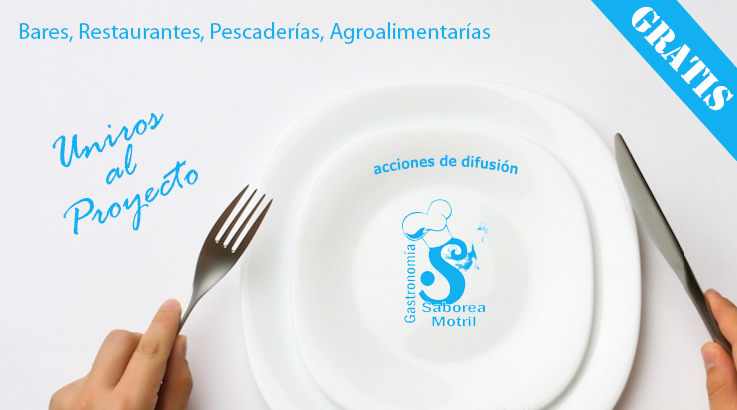

¿Nos acompañas?Proyecto de difusión de las riquezas gastronomicas de Motril. Tierra y Mar, Motril despensa de Europa, tiene para ofrecer unas materias primas de máxima calidad. En nuestros restaurantes, bares, agroalimentarias y comercios puedes encontrar productos de Máxima Calidad y Excelencia, en algunas ocasiones únicos.Os invitamos participeis para que los clientes y visitantes saboreen los productos y los platos que con ellos se elaboran en nuestros restaurantes.Si eres profesional podras unirte a nuestra corriente, juntos seremos más y mejores. |
607341224 - saboreamotril@paginascelestes.es |